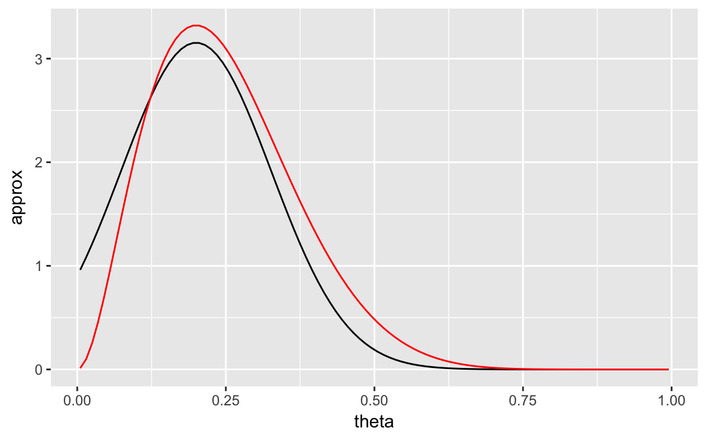
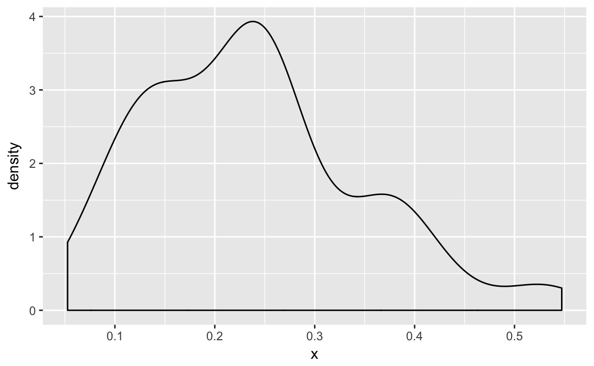

7 Bayesian Computation
This is a very complicated case Maude. You know, a lotta ins, a lotta outs, lotta what-have-yous.” — The Dude (The Big Lebowski)
7.1 How to calculate a posterior?
Bayesian inference requires calculating the posterior distribution, \[ p(\theta | y) = \frac{p(y | \theta) p(\theta)}{\int_{\theta' \in \Theta} p(y | \theta') p(\theta')\, d\theta' } . \] However, calculating this quantity is difficult. The denominator (marginal likelihood) is an integral. Additionally, and function of the distribution, e.g. the mean is \(\int \theta p(\theta | y) \,d\theta\) also requires calculating an integral.
In general there are several strategies for this.
- Symbolic/Analytic: in a few cases, the posterior distribution can be derived symbolically and has a closed-form solution that corresponds distribution that can be sampled from. Conjugate priors are the most common case of this.
- Functional: find a function that approximates the true posterior. e.g. maximum a posteriori, Laplace/quadratic approximation.
- Grid/Quadrature. approximate the posterior with a discrete distribution evaluated at a fixed set of points.
- Sampling. draw a sample from the posterior.
Additionally, methods an incorporate and combine various parts of these approaches.
7.2 Example: Globe-tossing model
Suppose that we want to estimate the proportion of the Earth’s surface that is water.
Suppose that you don’t have any idea what proportion of the Earth’s surface (\(\theta\)) is covered in water, so you think any proportion is equally likely: \[
\theta \sim \dbeta(1, 1) = \dunif(0, 1)
\] Alas, the internet is down so you cannot look it up on Wikipedia. Luckily, you do have a globe. Since it would be hard to directly calculate the area on the globe, you estimate the proportion that is water by repeatedly choosing a random point on the globe by spinning it, and marking whether that point is water ("W") or land ("L"). After 10 spins you have the following sequence of water and land.
smpls <- c("L", "W", "L", "L", "L", "L", "L", "L", "L", "W")Given that data, what is your estimate about the proportion of the earth’s surface that is water?
y <- sum(smpls == "W")
n <- length(smpls)To summarize, this model is \[ \begin{aligned}[t] y &\sim \dBinom(n, \theta) \\ \theta &\sim beta(1, 1) \\ \end{aligned} \] Suppose we use \[ \theta \sim beta(1, 1) \]
We will calculate this posterior distribution in multiple ways. For now, save the parameters of this model in some object for later reuse. The prior on \(\theta\) is,
prior <- list(a = 1, b = 1)Since the beta is a conjugate distribution of the binomial likelihood, we can analytically calculate the posterior distribution.
posterior <- list(a = prior$a + y, b = prior$b + n - y)The posterior distribution is \[ p(\theta | y) = \dbeta(3, 9) \]
7.3 Quadrature
7.3.1 Grid approximation
tl;dr: Approximate the posterior distribution by taking a grid of points in \(\theta\) and calculating \(p(\theta|y)\). Doesn’t work well in large dimensions, or if the grid does not include many points in the area with high posterior density.
library("tidyverse")
#> ── Attaching packages ───────────────────────────────────── tidyverse 1.2.1 ──
#> ✔ ggplot2 2.2.1 ✔ purrr 0.2.4
#> ✔ tibble 1.4.2 ✔ dplyr 0.7.4
#> ✔ tidyr 0.8.0 ✔ stringr 1.3.0
#> ✔ readr 1.1.1 ✔ forcats 0.3.0
#> ── Conflicts ──────────────────────────────────────── tidyverse_conflicts() ──
#> ✖ dplyr::filter() masks stats::filter()
#> ✖ dplyr::lag() masks stats::lag()
grid <- tibble(
theta = seq(0, 1, length.out = 10),
prior = dbeta(theta, shape1 = prior$a, shape2 = prior$b),
likelihood = dbinom(y, size = n, prob = theta)) %>%
mutate(posterior_unst = prior * likelihood,
posterior = posterior_unst / sum(posterior_unst))See Gelman et al. (2013 Sec 10.1)
7.4 Functional Approximations
See Gelman et al. (2013 Sec 10.3, 13.3)
7.4.1 Maximum A Posteriori
tl;dr: approximate the posterior distribution with a point mass at the
Maximum a posteriori estimation finds value of \(\theta\) that maximizes the posterior distribution, \[ \hat{\theta} = \arg\max_{\theta} p(\theta |y) . \]
The MAP is best thought of a Bayesian point estimate of the mode of the posterior distribution. However, unlike (most?) other point estimates it does not require first computing the posterior distribution.
However, we can consider it a functional approximation of the posterior distribution, in which the approximating distribution is a point mass at \(\hat{\theta}\).
Notes:
often the maximum of the posterior is much easier to calculate than the entire posterior distribution
when the prior is improper, \(p(\theta | y) \propto p(y | theta)\) and the MAP and maximum likelihood (MLE) estimators produce the same point estimate.
7.4.2 Laplace Approximation
tl;dr: approximate the posterior distribution with a normal distribution centered at the maximum.
The Laplace or quadratic approximation to the posterior distribution uses a normal approximation to the posterior distribution.
- Find maximum of \(p(\theta | y)\).
- Take the Taylor expansion around the maximum \(\hat{\theta}\),
\[ \begin{aligned}[t] p(\theta | y) & \approx p(\widehat{\theta}) + (\theta - \widehat{\theta}) \left[ \frac{d}{d \theta} p(\theta | y) \right]_{\theta = \hat{\theta}} + \frac{1}{2} (\theta - \hat{\theta})^2 \left[\frac{d^2 }{d \theta^2} p(\theta| y) \right]_{\theta = \hat{\theta}} \\ &= p(\widehat{\theta}) + \frac{1}{2} (\theta - \hat{\theta})^2 \left[\frac{d^2 }{d \theta^2} p(\theta| y) \right]_{\theta = \hat{\theta}} \\ \end{aligned} \] where the second term is zero since \(\hat{\theta}\) is the maximum of \(p(\theta | y)\), \(d / d\theta p(\theta | y) = 0\).
The first term \(p(\theta)\) is a constant. The second term is proportional to the logarithm of a normal density, \[ p(\theta | y) \approx dnorm\left(\hat{\theta},\left[ - \frac{d^2}{d \theta^2} \log p(\theta | y) \middle|_{\theta = \hat{\theta}} \right] \right) \]
Extensions of this approach include:
- Fitting a mixture of normal densities. This is especially useful for multi-modal densities. (Gelman et al. 2013, 319)
- Using a multivariate Students-\(t\) distribution instead of a normal distribution (Gelman et al. 2013, 319)
- Using the the normal or Laplace approximation as a proposal distribution with importance sampling (Gelman et al. 2013, 319)
7.4.2.1 Example
Rather than deriving the second derivative for the posterior distribution, I will use numerical derivatives in this example. The idea is the same, although the numerical derivatives are slower than symbolic derivatives.
Use the R function optimize to calculate the maximum of the posterior. We will need to use the option hessian = TRUE in order to calculate the second derivatives needed for the variance parameter of the normal distribution.
Write a function that takes a single parameter par and returns the log posterior value.
calc_posterior <- function(par) {
lprior <- dbeta(par, prior$a, prior$b, log = TRUE)
lpost <- dbinom(y, size = n, prob = par, log = TRUE)
- (lprior + lpost)
}Find \(\hat{\theta}\) and the second derivative using optim:
ret <- optim(0.5, fn = calc_posterior, hessian = TRUE, method = "Brent",
lower = 0, upper = 1)The Hessian is a matrix of the second partial derivatives, which is what we need.
theta_max <- ret$par
theta_var <- 1 / drop(ret$hessian)Let’s plot the value of the Laplace approximation and the true posterior distribution.
tibble(
theta = ppoints(100),
approx = dnorm(theta, theta_max, sqrt(theta_var)),
actual = dbeta(theta, shape1 = posterior$a, shape2 = posterior$b)
) %>%
ggplot(aes(x = theta)) +
geom_line(aes(y = approx)) +
geom_line(aes(y = actual), colour = "red")
7.4.3 Variational Inference
tl;dr: approximate the posterior distribution with a simple(r) distribution that is close to the posterior distribution.
TODO
See Grimmer (2011), Ranganath, Gerrish, and Blei (2014), Kucukelbir et al. (2015), and Blei, Kucukelbir, and McAuliffe (2017).
7.5 Sampling Methods
7.5.1 Numerical Integration
Numerical integration calculates a expectation of a function using samples \(\theta^1, \dots, \theta^S\) from a distribution \(p(\theta)\), \[ \E(h(\theta) | y) = \int h(\theta) p(\theta | y) d\theta \approx \frac{1}{S} \sum_{s = 1}^S h(\theta^s) . \] The estimation error improves with the number of (independent) samples.
Deterministic numerical integration is based on evaluating \(h(\theta) p(\theta | y)\) at a set of points \(\theta^1, \dots, \theta^S\). \[ \E(h(\theta) | y) = \int h(\theta) p(\theta | y) \approx \frac{1}{S} w_s h(\theta^s) p(\theta^s | y) , \] with weights \(w_s\) for the volume of each point. The accuracy of this method can improve with smarter choices of the grid and also better interpolation between points. The simplest method is a grid with equal weights, but more sophisticated quadrature methods also exist.
7.5.2 Inverse transform sampling
A common method of random sampling is inverse-transformation sampling.
Suppose we want to sample from random variable \(X\) which has a distribution with a CDF of \(P(X)\). We can draw a sample as follows,
Draw \(u\) from \(unif(0, 1)\)
Let \(x = P^{-1}(u)\), where \(P^{-1}(X)\) is the inverse of the CDF (quantile) function for \(X\).
p <- runif(100)
post_inverse <- qbeta(p, shape1 = posterior$a, shape2 = posterior$b)
ggplot(tibble(x = post_inverse), aes(x = x)) +
geom_density()
This generally only works on a univariate distribution
We would have to CDF of the posterior distribution analytically, but in hard problems that is something we don’t know.
7.5.3 Direct approximation
Compute the target density at the set of of evenly spaced values \(\theta_1, \dots, \theta_S\) that cover (most of) the parameter space for \(\theta\).
Approximate \(p(\theta | y)\) by the density at these values with \[ p(\theta | y) \approx \left\{ \frac{p(\theta_s| y)}{ \sum_{j = 1}^S p(\theta_{j} | y)} \right\}_{s = 1}^S \] This will also work with an un-normalized density function.
To draw a random sample from this, sample from the discrete approximation with weights proportional to the \(p(\theta_s | y)\).
7.5.3.1 Example
In the water example, there is no reason to do this. However, there could be cases where it is possible to calculate the
theta_grid <- seq(0, 1, length.out = 512)
w <- (dbeta(theta_grid, prior$a, prior$b) *
dbinom(y, size = n, prob = theta_grid))
theta_direct <- sample(theta_grid, size = 512, replace = TRUE, prob = w)mean(theta_direct)
#> [1] 0.2547.5.4 Rejection sampling
tl;dr: Sample from a proposal density and reject with a probability proportional to the ratio of the target density to the proposal density. Works best if the proposal density is close to the target density.
Rejection sampling consists of the following:
- Sample from a proposal density, e.g. the prior \(p(\theta)\)
- Accept with probability \(p(\theta | y) / p(\theta)\)
Suppose there is a positive function \(g(\theta)\) for all \(\theta\) for which \(p(\theta | y) > 0\),
- Draw from a probability density proportional to \(g\)
- Importance ratio \(p(\theta | y) / g(\theta)\) must have a known bound, which means that there exists a constant \(M\) such that \(p(\theta | y) / g(\theta) \leq M\) for all \(\theta\).
The algorithm proceeds as follows
- Sample \(\theta\) at random from the probability proportional to \(g(\theta)\)
- With probability \(p(\theta | y) / M g(\theta)\) accept \(\theta\) as a draw from \(p\). If rejected, return to 1.
Need to choose \(M\) so that the probability in step 2 is not greater than 1. This can be \(M = \max p(\theta | y)\). But in general, the efficiency of the algorithm depends on \(M\), but it may be hard to find a good value.
Since the probability of success is \(1 / M\), the expected number of draws from proposal density to get a single draw from the
The ideal case is that the approximate density \(g(\theta)\) is roughly proportional to \(p(\theta | y)\).
- univariate distributions
- truncated distributions, e.g. normal truncated distribution
7.5.5 Importance Sampling
tl;dr: Draw a sample from a target distribution from an approximate distribution weight those samples by the ratio of target distribution to the approximate distribution. Works best if the proposal density is close to the target density, or at least wider than the target density.
Suppose that we want to know \(\E(h(\theta) | y)\) but cannot directly sample from \(p(\theta | y)\).
However, we can sample from a distribution \(g(\theta)\). Then, \[ \E(h(\theta | y)) = \frac{\int h(\theta) q(\theta | y) d\theta}{\int q(\theta | y) d\theta} = \frac{\int \left[h(\theta) q(\theta | y) / g(\theta) \right] g(\theta) d\theta}{\int \left[ q(\theta | y) / g(\theta) \right] g(\theta) d\theta} \] This can be estimated using \(S\) draws \(\theta^1, \dots, \theta^S\) from \(g(\theta)\), \[ \frac{\frac{1}{S} \sum_{s = 1}^s h(\theta^s) w(\theta^s)}{\frac{1}{S} \sum_{s = 1}^S w(\theta^s)} , \] where \[ w(\theta^s) = \frac{q(\theta^s | y)}{g(\theta^s)} \] are called the importance ratios or importance weights.
use the same set of random draws for the numerator and denominator to reduce sampling error.
worst case: importance ratio are small with high probability, but with a low probability are very high. This occurs when the \(q\) has wide tails relative to \(g\). Can use a \(t_4\) distribution as a proposal distribution for a normal distribution, but not a normal distribution for a proposal distribution of a \(t_4\) distribution.
The values of the importance weights can be used to discover problems with the method. If any ratios are too large, estimates will be poor.
If the variance of the weights is finite, the effective sample size is \[ S_{eff} = \frac{1}{\sum_{s = 1}^S (\tilde{w}(\theta^s))^2} . \] where \(\tilde{w}\) are the normalized weights, \[ \tilde{w}(\theta^s) = \frac{w(\theta^S)}{\sum_{s' = 1}^S w(\theta^{s'})}. \]
The loo package uses a method to smooth these importance weights as well as diagnostics for overly large sample weights (Vehtari, Gelman, and Gabry 2015; Vehtari, Gelman, and Gabry 2017a).
Importance resampling (or sampling-importance resampling) obtains independent samples with equal weights.
Draw \(S\) draws \(\theta^1, \dots, \theta^S\) from the approximate distribution \(g\).
Then to draw a sample of size \(k < S\), sample without replacement where sampling \(\theta^s\) is proportional to its weight, \[ \Pr(\theta^s) \propto w(\theta^s) = \frac{q(\theta^s | y)}{g(\theta^s)} . \]
Sampling without replacement helps to prevent a degenerate case where all or most of the \(k\) samples are the same \(\theta^s\) due to large importance ratios.
If the proposal distribution is the prior, then the weights are proportional to the likelihood, \[ w(\theta^S) = \frac{p(\theta | y)}{p(\theta)} = \frac{p(y | \theta) p(\theta)}{p(\theta)} = p(y | \theta) \]
Other notes
Similar to both rejection sampling and the Metropolis algorithm
Sequential Monte Carlo (SMC) is a variant that is particularly useful for updating posterior distributions when the data arrives sequentially—either real time or because it involves time series data (Carvalho et al. 2010).
To update a model when a similar posterior is available. E.g. the posterior distribution for leave-one-out cross validation (Vehtari, Gelman, and Gabry 2015). The distribution \(p(\theta | y_{-i})\) is likely to be similar to \(p(\theta | y)\), so if we have already calculated \(p(\theta | y)\) we can use the later as the proposal distribution for \(p(\theta | y)\).
See Gelman et al. (2013 Sec 10.4), Gelfand and Smith (1990), Lopes, Polson, and Carvalho (2012), and Smith and Gelfand (1992) for more on importance sampling.
7.5.5.1 Example
Use the prior as the proposal distribution.
S <- 512
theta <- rbeta(S, prior$a, prior$b)
w <- dbinom(y, size = n, prob = theta)The mean value of the posterior is
sum(theta * w) / sum(w)
#> [1] 0.246The effective sample size of this sample is,
w_tilde <- w / sum(w)
1 / sum(w_tilde ^ 2)
#> [1] 215Finally, to draw a new sample from this, we can draw without replacement (works if the new sample size is much smaller than the original),
post_sir1 <- sample(theta, size = S / 2, replace = TRUE, prob = w)or with replacement,
post_sir2 <- sample(theta, size = S, replace = TRUE, prob = w)depending on our purposes.
7.5.6 MCMC Methods
See Gelman et al. (2013 Ch 11–12) for more on MCMC methods.
7.5.6.1 Metropolis-Hastings
The Metropolis-Hastings algorithm is a family of MCMC methods useful for sampling from posterior distributions.
Draw a starting value \(\theta^0\) for which \(p(\theta^0 | y) > 0\). This can be specified manually or sampled from a crude approximation.
For iterations *t = 1, 2, …$:
- Sample a proposal value \(\theta^{*}\) from a jumping distribution (proposal distribution) at time \(t\), \(J_t(\theta^{*} | \theta^{t - 1})\).
Calculate the ratio of the density of the proposal and target distributions, \[ r = \frac{p(\theta^{*} | y) / J_t(\theta^* | \theta^{t - 1})}{p(\theta^{t - 1} | y) / J_t(\theta^{t - 1} | \theta^{*})} . \]
Set \[ \theta^t = \begin{cases} \theta^* & \text{with probability } \min(r, 1) \theta^{t - 1} & \text{otherwise.} \end{cases} \]
Thus the transition distribution \(T_t(\theta^t | \theta^{t - 1})\) is a mixture distribution of
- point mass at \(\theta^t = \theta^{t - 1}\)
- jumping distribution $J_t(^t | ^{t - 1}),
with the weights adjusting for the acceptance rates.
The main requirements for this algorithm are
- Be able to draw samples from the jumping distribution \(J_t(\theta^* | \theta)\)
- Be able to calculate the density ratio \(r\), usually meaning that both \(p(\theta^* | y)\) and \(p(\theta^{t - 1} | y)\) must be able to be calculated for all \(\theta\).
The jumping distribution can be asymmetric. However, it if is symmetric (Metropolis algorithm), then the ratio acceptance ratio simplifies to, \[ r = \frac{p(\theta^* | y)}{p(\theta^{t - 1} | y)} . \]
Notes:
For this to work the Markov chain this produces must have stationary distribution that (Gelman et al. 2013, 279).
MH is similar is like a stochastic optimization algorithm. Instead of always moving towards the region of higher density, it only stochastically moves towards the region of higher density. It tunes how often it moves towards the region of higher density in order to ensure that it samples from the distribution in proportion to the density.
MH is similar to a dynamic form of rejection sampling or importance sampling. However, whereas those methods have a static proposal distribution, the jumping distribution, while fixed in its parameters, of the HM algorithm is re-centered around the last draw, so it can move to areas of higher density.
When does MH not work well?
- Posterior distributions with wide tails.
- Multimodal distributions
7.5.6.2 Gibbs Sampler
The Gibbs sampler has been one of the most common methods used to sample from posterior distributions.
The Gibbs sampler is a special case of the Metropolis-Hastings sampler. Suppose that the parameter vector \(\theta\) can be divided into \(d\) subvectors.
For iterations, \(t = 1, \dots\):
For \(j \in 1, \dots, d\)
- Draw a value from the conditional distribution of \(\theta_j\) given all the other parameters, \[ \theta_{j}^t \sim p(\theta_j | \theta^{t - 1}_{-j}, y), \] where \(\theta^{t - 1}_{-j}\) has consists of updated parameters for all parameters preceding \(j\) and the previous iteration’s values for all succeeding parameters, \[ \theta_{-j}^{t - 1} = \left(\theta_1^t, \dots, \theta_{j - 1}^t, \theta_{j - 1}^{t - 1}, \dots, \theta_d^{t - 1}\right) . \]
Gibbs sampler is a special case of MH algorithm. It is appealing because the use of full-conditional distributions means that draws are never rejected.
The use of full-conditional distributions often results in highly correlated iterations. Many applications adjust the method to reduce these correlations.
It can be difficult to derive the full-conditional distributions in many cases.
7.5.6.3 Hamiltonian Monte Carlo (HMC)
7.5.6.3.1 Assessing Convergence
Iterative simulation methods have two additional issues above and beyond those of simulations (Gelman et al. 2013, 282):
The iterations have not proceeded long enough to find the typical set and are not drawing samples from the target distribution.
The samples have within-sequence correlations. Serial correlation is not a fatal problem.
How to monitor and assess iterative simulation
Design simulations to allow monitoring of convergence by running multiple chains from dispersed starting points.
Monitor convergence by comparing within chain variation and between variation using the \(\hat{R}\) statistic. Only when the between and within variations are approximately equal will the multiple chains appear to be sampling from the same distribution.
Require a certain level of efficiency in the output in terms of acceptable sample size. If that that efficiency is too costly to obtain, it may require tweaking the model or the algorithm to be more efficient. See Gelman et al. (2013 Ch. 12) for methods to speed up MCMC.
7.5.7 Discarding early iterations
Because iterative algorithms may take time to find the typical set of the target distribution, sometimes the early iterations are discarded.
In Gibbs sampling, it is common to have a “burn-in” period which is discarded. The algorithm is theoretically still sampling from the posterior distribution, but in the burn-in period it may not have wandered into the typical yet and thus those draws are unrepresentative.
In HMC methods, there is a “warmup” period of each chain. In this period the algorithm is not sampling using a method guaranteed to draw a sample from the posterior distribution. Instead it is searching for values of the tuning-parameters of the algorithm. Only after these turning-parameters are set are samples used for analysis. This is similar to the burn-in period of Gibbs sampling in that those iterations are discarded. However, it is serving a fundamentally different role in that the
Generally, the issue with MCMC algorithms is not in finding the typical set. In application, they tend to find typical set quickly (FIND CITE – Jackman?). Generally, the larger issue is that the draws are correlated and it may take a long time to explore the posterior distribution.
See Gelman et al. (2013, 282).
7.5.8 Monte Carlo Sampling
Monte Carlo methods are used to numerically approximate integrals, when the integral function is not tractable but the function being integrated is.
In Bayesian stats, the mean of a probability density \(p(\theta)\) is \[ \mu = \int_{\Theta} \theta p(\theta) \, d \theta . \] Except for cases in which the distribution \(p(\theta)\) has a known form (not the case for most applied models) for functional form of the integral isn’t known, but \(p(\theta)\) is
The Monte Carlo estimate of \(\mu\) is.
Draw \(N\) independent samples, \(\theta^{(1)}, \dots, \theta^{(N)}\), from \(p(\theta)\).
Estimate \(\hat{\mu}\) with \[ \hat{\mu} = \frac{1}{N} \sum_{n = 1}^N \theta^{(N)} . \]
If \(p(\theta)\) has finite mean and variance, the law of large numbers ensures that the Monte Carlo estimate converges to the true value \[ \lim_{N \to \infty} \hat\mu \to \mu \] and the estimation error is governed by the CLT, \[ | \mu - \hat{\mu} | \propto \frac{\sigma}{\sqrt{N}} \]
Example: The mean of \(Y = X^2\) where \(X \sim \dnorm(0, 1)\). Draw a sample from \(Y\),
x <- rnorm(1024, 0, 1) ^ 2The Monte Carlo estimates of the mean is
mean(x)
#> [1] 1.07with standard error,
sd(x) / sqrt(length(x))
#> [1] 0.0486